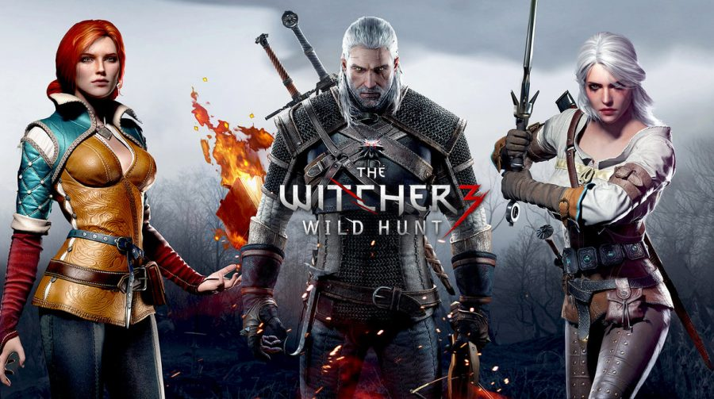

Os livros que deram origem a tudo

The Witcher: é uma série literária de contos e romances de fantasia escritos pelo polonês Andrzej Sapkowski que seguem a história do mítico Geralt de Rívia, um dos últimos bruxos restantes na Terra. No universo de Sapkowski, bruxos são caçadores de monstros geneticamente modificados que desenvolvem habilidades sobre-humanas quando jovens para combater ameaças mortais em troca de dinheiro.
A Saga The Witcher constitui-se de cinco romances concentrados nos personagens Geralt de Rívia e Ciri, uma criança de sangue ancestral que, sendo princesa de um país recentemente conquistado e uma peça da política internacional, inicia treinamento para se tornar uma caçadora de monstros.
O Jogo que tornou o Bruxo conhecido
The Witcher é uma série de jogos eletrônicos estabelecida em 2007 pela desenvolvedora polonesa CD Projekt RED que baseia-se na série de contos e romances Wiedźmin, do escritor Andrzej Sapkowski. Os games, apesar de serem considerados adaptações não-canônicas, dão sequência aos acontecimentos dos livros e à saga do bruxo Geralt de Rívia, que agora luta para recuperar sua memória e impedir que o exército de cavaleiros vermelhos conhecido como Caçada Selvagem tome o mundo.
A saga virou série

Em The Witcher, série original da Netflix, Geralt de Rivia (Henry Cavill) é um solitário caçador de monstros, que luta para encontrar seu lugar num mundo onde pessoas são mais crueis que criaturas. Mas seu caminho irá cruzar com duas figuras que mudarão sua vida: a feiticeira Yennefer de Vengerberg (Anya Chalotra) e a princesa poderosa Cintran Ciri (Freya Allan). A trama acompanha os três em linhas do tempo diferentes até que finalmente suas vidas são conectadas quando se juntam na Batalha de Sodden Hill contra os invasores de Nilfgaard.
Geralt de Rivia é um bruxo, um mutante com poderes especiais que mata monstros por dinheiro. A Terra está num estado de caos enquanto o império de Nilfgaard procura expandir o seu território. Entre os refugiados desta luta está Cirilla (Freya Allan), também chamada Ciri, a Princesa de Cintra, que está sendo perseguida por Nilfgaard. Ela e o Geralt estão destinados um ao outro. Em suas aventuras Geralt também conhece Yennefer de Vengerberg (Anya Chalotra), uma feiticiera.